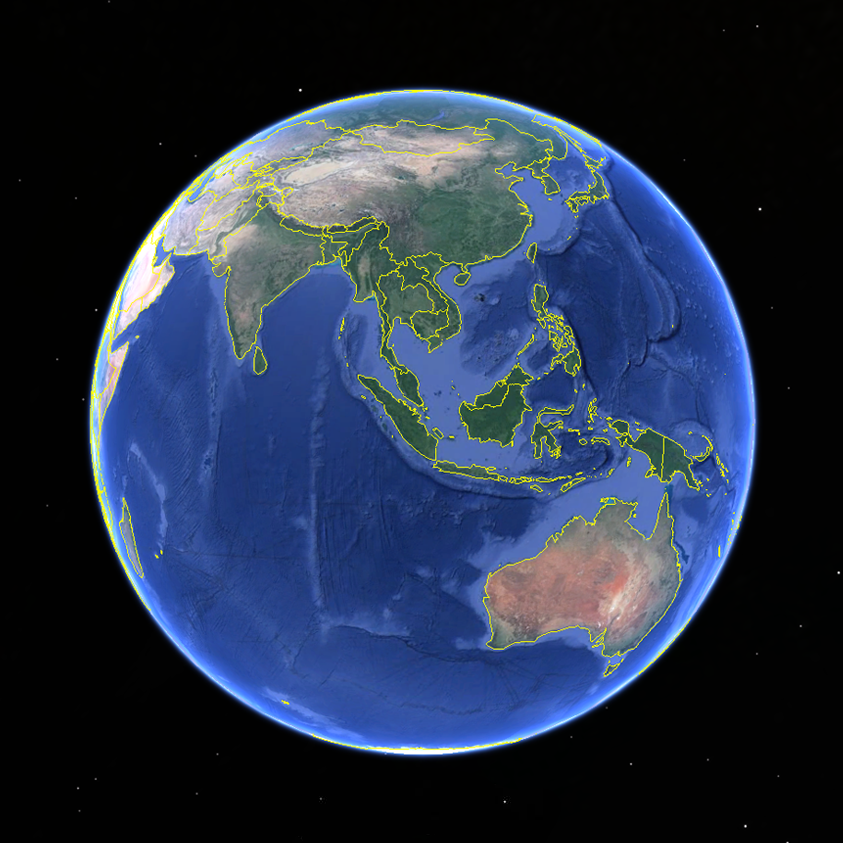

<ion-view view-title="区域观测"  id="heightall">
    <ion-content>
        <div style="width:{{allwidth}};height:{{allhegiht}};background: black;position: relative" >
            
        </div>
        <canvas id="myCanvas" style="position: absolute;top: 0;left: 0;bottom: 0;right: 0;margin: auto"
                on-hold="Hold()"></canvas>
        <div ng-if="canshow" style="position: absolute;top:0;right: 0;background:rgba(255,255,255,0.3) ;width: 100px;height: 90px">
            <p style="color:rgba(255,255,255,0.8);text-align: center;height: 30px;line-height: 30px" >行列号</p>
            <p style="color:rgba(255,255,255,0.8);text-align: center;height: 30px;line-height: 30px" >({{single.StartLineNo}},{{single.StartColumnNo}})</p>
            <p style="color:rgba(255,255,255,0.8);text-align: center;height: 30px;line-height: 30px" >({{single.EndLineNo}},{{single.EndColumnNo}})</p>
        </div>
    </ion-content>
</ion-view>